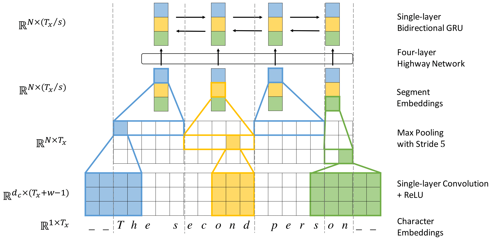

|
Jason Lee
I am a Ph.D student in Computer Science at New York University, where I work on building neural networks for Natural Language Understanding. I am a member of the CILVR group and work closely with Kyunghyun Cho and Sam Bowman. Email / CV / Google Scholar / Github |

|
| Publications |
|  |
Fully Character-Level Neural Machine Translation without Explicit Segmentation |
|
|